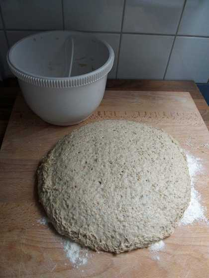
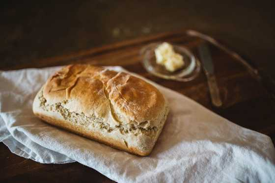
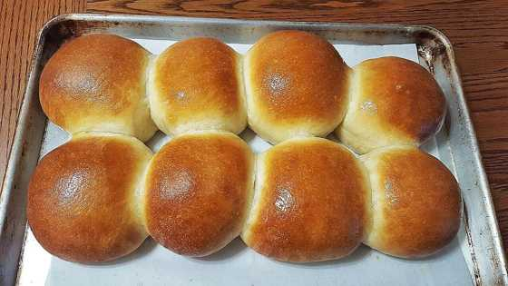
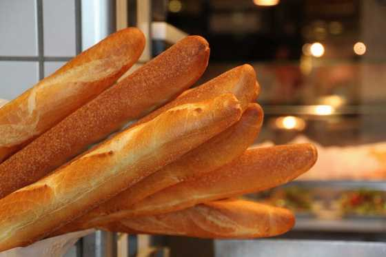
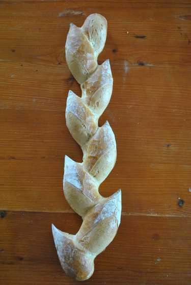
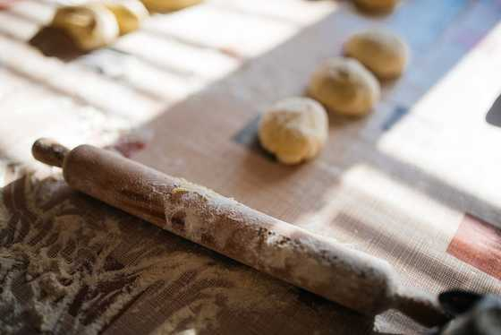
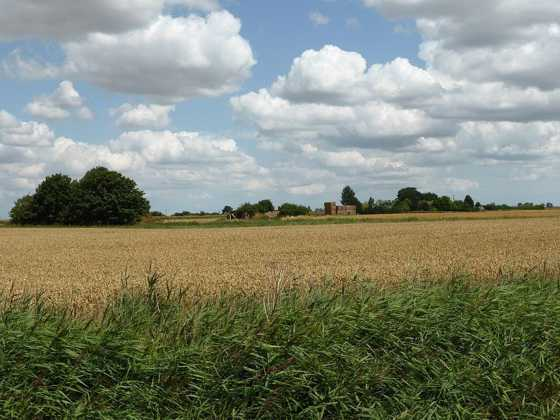

ABOUT
お店のこと
三重県鈴鹿市池田町の住宅街に、2022年6月にオープンした小さなパン屋さんです。紹介記事では「絵本に出てくるようなメルヘンチックな雰囲気」と書かれています。
- 北海道産小麦100%、きび砂糖、自然塩、天然水、北海道よつ葉バターを使用
- 乳化剤・改良剤を使わない、無添加の生地で焼く
- 食パンから総菜パンまで手作り
- ハンドメイドの小物も扱っていた時期があります
※2022年の紹介記事による情報です。現在の内容はInstagramでご確認ください。

BREAD
パンのこと
紹介記事では、ソーセージパン、レーズンパン、コーンとチーズの調理パンなどが紹介されていました。ラインナップ・価格・営業日は 準備中 です(変更の可能性があるためInstagramをご確認ください)。

食パン
手づくりの食パン。

小さめのパン
店名どおり、小ぶりなパンが中心と紹介されていました。

総菜パン
ソーセージやコーンチーズなど。内容は準備中です。








北海道産小麦のイメージとして麦畑の写真を添えています(撮影地は北海道ではありません)。
VOICE
口コミ
以下は制作側が作成したイメージ例で、実在のお客様の声ではありません。
イメージ例
小ぶりなパンなので、いろいろな種類を少しずつ選べるのがうれしいです。
ご近所のお客様(イメージ)イメージ例
小麦の味がしっかり感じられて、朝ごはんにぴったりでした。
朝食に買われた方(イメージ)イメージ例
住宅街の中の小さなお店で、絵本の中に入ったような気分になれます。
はじめて訪れた方(イメージ)